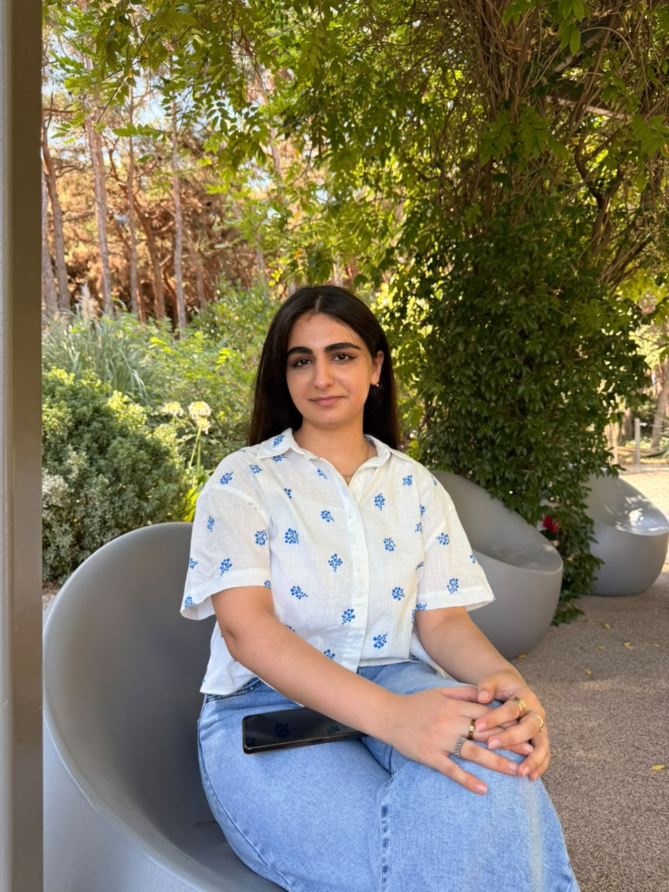

MATHEMATICS · CREATIVITY · TECHNOLOGY
Curious mind.
Creative spirit.
Hello, I'm Khadija — a freshman Mathematics student at ADA University. I enjoy discovering the patterns behind ideas and turning what I learn into something tangible.

in progress ✳✳✿
Currently exploring
MathematicsLogic & circuitsWeb developmentUniversity lifeA LITTLE TOUR
More than a student ID.
My portfolio brings together the subjects I enjoy, the projects I build, and the moments that make university memorable.